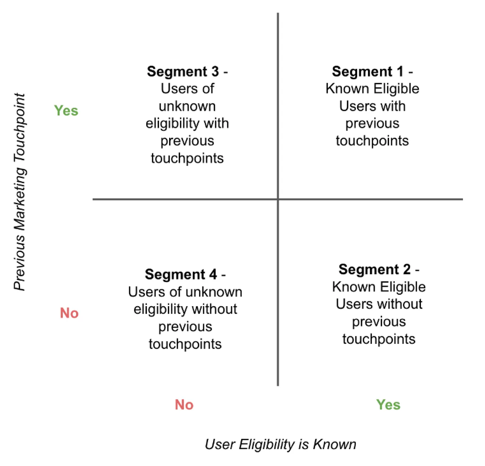
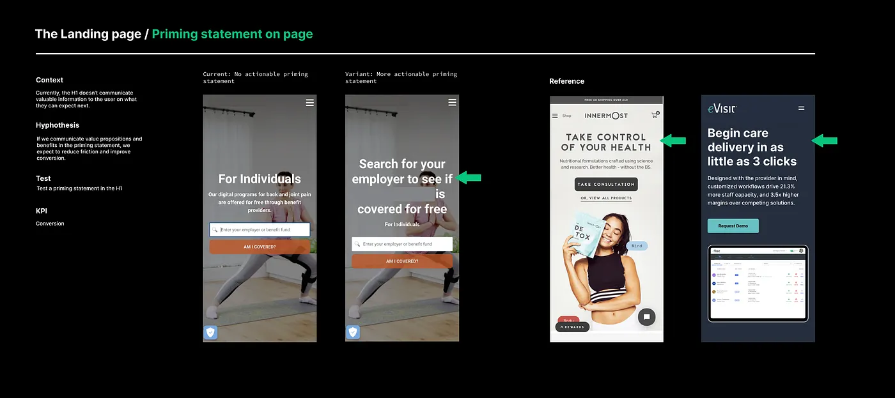
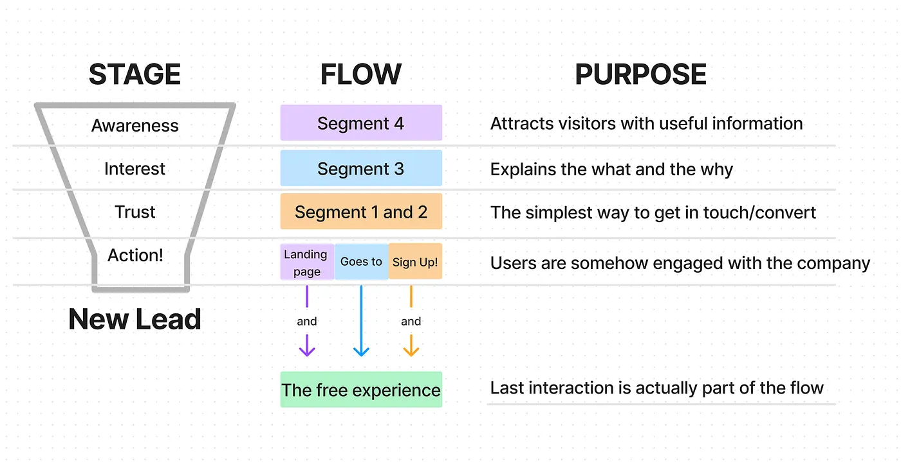
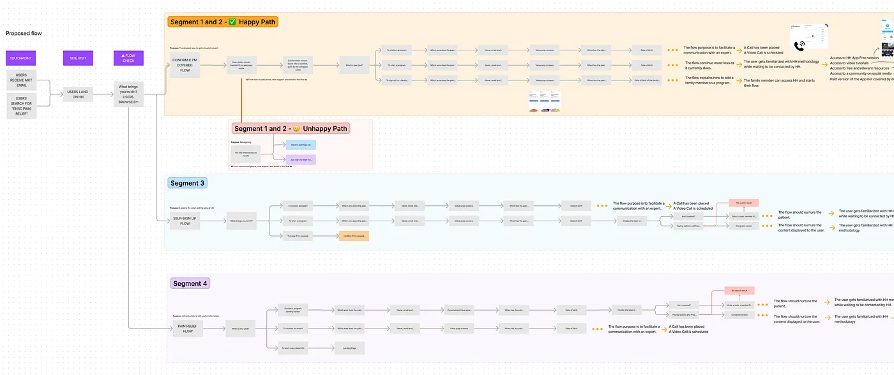

The Challenge
A health-tech company reached out to us. They had a great value proposition, a consolidated service, and a fantastic team working daily to make it even better. Despite all this, the client-facing communication was confusing enough to take us almost two months to fully understand how people could access their service.
The opportunity was clear: identify the friction points in the user journey and build a roadmap to optimize conversion across all user segments.
My Role & Approach
As part of the Conversion Rate Optimization (CRO) team, I jumped into a CRO Audit to identify the most significant opportunities. While the findings suggested there were high-level best practices the client could take advantage of, the most valuable optimization opportunity came from a more profound level of intervention.
- Audit first: Gather findings from available sources — comparative analysis, psychological triggers, and best practices.
- Benchmark: Align with current trends of direct competitors and best-performance companies.
- User-centric: Focus on building trust through low-scope / high-impact experiments.
- Storytelling: Use user journeys to shift stakeholder conversations from opinions to possibilities.
Part 1: Audit & Benchmark
A CRO Audit gathers findings from available sources, such as comparative analysis, psychological triggers that impact behavior, and best practices applied to the client's digital assets.
The CRO Audit was run on the high-traffic pages and primary user flow from the website, mobile and desktop variations included.
When running this kind of audit, we go from low-scope opportunities (H1 copy, supportive paragraph, loading time, screen sequences, social proof, voice, message, CTAs copy) to high-scope optimization (adding screens, features, interactions, search engines, and so on).
Our principle:
Since we are all humans, the most important thing is to build trust. That's why we always focus our proposals on those lowest-scope / highest-impact experiments.
The Benchmark helped us align with current trends of direct competitors and best-performance companies. Having those insights in the loop embraced our proposals, validated solutions, and repurposed best practices.
Part 2: The User Journey
One of the biggest challenges was negotiating with stakeholders. While everyone's job is essential, the capacity for execution is limited. Prioritizing efforts and strategies that would translate into business outcomes was crucial. That's where storytelling played its part.
Users' journeys helped the stakeholders imagine themselves in the flow — and to find themselves in a position where friction was happening. The conversation moved from "I think this is the best solution" to "how we can help users solve this problem." The speech changed completely. It became less about beliefs and more about possibilities.
The Discovery
There were four personas for the health-tech company. Each persona had interacted with the company differently. Once we let the client know about these four personas, we showed how the current flow impacted the interaction with the different users.
The main concern: The client's communication was focused on only one segment, overlooking the other three segments of personas that had no reason to stay in the flow.

The Proposals
The proposals we presented focused on how they could help mitigate the negative impact on the other segments of personas while boosting their current audience experience.
The tests were presented as 9 Mockups in Figma. Each test got:
- Context
- Hypothesis
- Test name
- KPI
- Mockup
- Competitor example
They were divided into three buckets:
- Lowest scope tests — easiest to implement.
- Middle scope tests.
- Most impactful tests — currently the hardest to implement.

Part 3: The Roadmap
After having the first conversation with the client, we set up a Roadmap to focus on the optimization goal.
Step 1: Map segments to the funnel
We mapped the segments of personas into the marketing funnel stages to set each flow's purpose.

Step 2: Create optimized user journeys
Once we identified the purpose of the different flows, we created the user journeys that best accomplish that purpose and are optimized enough to work between them with the minimum amount of implementation work.

The image above shows a preview of the proposed new user flows.
Step 3: Align experiments to business outcomes
We took that information into the Roadmap to align the experiments to business outcomes. This has been a WIP roadmap since, on each iteration, it suffered adjustments according to the client and experiments requests. Nevertheless, the primary purpose of the Roadmap is to keep track of the experiments, document results, and inform the testing plan.
Currently, the Roadmap is a spreadsheet that communicates:
- Basic Information: Test name, Test Goal, Cross-Business Goals, Segment, Status.
- Description: Brief description, Pages where the experiment runs, Platform, Comments.
- Analyze and Plan: Baseline Conversion Rate %, Target Conversion Rate %, Total Variations, Variations Preview, Start-End date, Traffic Allocation.
- Results: Result % (Lift/Loss), What should you investigate further? How does this test impact roadmap prioritization?
Part 4: Gather Insights & Iterate
After running tests for months, we collected incredible findings on people's preferences and behavior. Some of these were expected, and other results were completely mind-blowing.
We encountered significant interaction, and the middle is moving in a good direction overall, but more importantly, tests kept giving us information on how to tailor our next strategy — and helped us understand what is going on in the person's life beyond the screens.
Key Takeaways
- Testing is a reminder of our human condition. In many cases, I have seen how great projects put their hard work out on the internet, getting nothing from people, interaction, and results.
- Small tweaks matter. After watching the same mistake repeatedly and how the little tweaks have helped to increase that desired metric, we must identify the concerns and motivations that drive people to take action.
- CRO can not be a disconnected strategy. It feeds from research, marketing, sales, content, growth, development, and every possible team behind these projects.
- CRO is about taking care of people. To me, CRO has been the door through which we can take care of people while they are using our digital products.